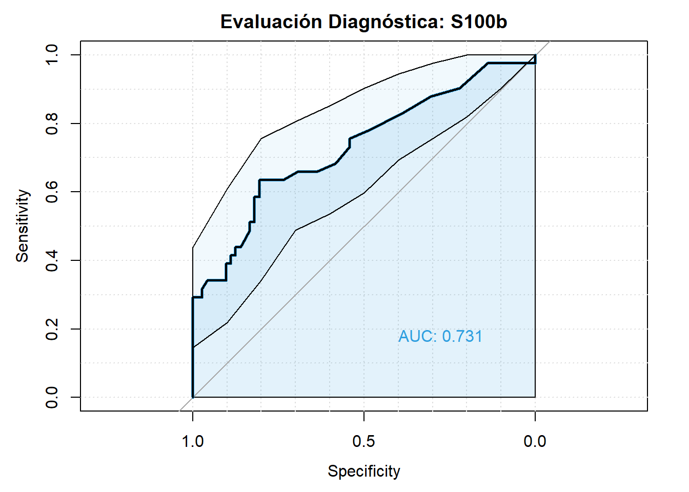

Curvas ROC, Área Bajo la Curva (AUC) y Punto de Corte Óptimo
Author
Jesús Esteban Hernández
Published
November 15, 2026
Curvas ROC y Punto de Corte Óptimo
En el tema anterior evaluamos la validez de criterio de un test diagnóstico, en general de cualquier característica categórica que no fuese independiente de la enfermedad, gracias a lo que nos ayudase a discriminar enfermos de no enfermos.
En realidad, no pocas pruebas devuelven valores en escala continua, por lo que esteblecer el punto de corte que mejor ayude a discriminar enfermos de sanos suele ser un tarea previa.
En esta sesión evaluamos marcadores diagnósticos continuos mediante el análisis de curvas ROC (Receiver Operating Characteristic) y la estimación del área bajo la curva (AUC).
La capacidad discriminativa puede ser utilizada tanto para distinguir el estado actual como un desenlace futuro, sigue siendo un problema de clasificación.
Vamos a utilizar los datos aSAH Evaluación del biomarcador s100b para mal pronóstico tras un evento cerebrovascular (outcome)
Carga de librerías y datos
Code
library(pROC)library(ggplot2)# Dataset aSAH: Evaluación del biomarcador s100b para mal pronóstico (outcome)data(aSAH,package ="pROC") #No hace falta especificar paquetesi ya se ha cargado la librería.head(aSAH)
gos6 outcome gender age wfns s100b ndka
29 5 Good Female 42 1 0.13 3.01
30 5 Good Female 37 1 0.14 8.54
31 5 Good Female 42 1 0.10 8.09
32 5 Good Female 27 1 0.04 10.42
33 1 Poor Female 42 3 0.13 17.40
34 1 Poor Male 48 2 0.10 12.75
Objetivos de aprendizaje
Comprender la limitación de fijar puntos de corte arbitrarios en variables continuas y el fundamento de la evaluación no paramétrica continua.
Construir e interpretar la curva ROC (Receiver Operating Characteristic) como el balance dinámico entre la Sensibilidad (\(s\)) y la Tasa de Falsos Positivos (\(1 - e\)).
Interpretar probabilística e inferencialmente el Área Bajo la Curva (AUC) y calcular sus intervalos de confianza mediante el método de DeLong.
Determinar empíricamente el punto de corte óptimo mediante el Índice de Youden (\(J\)) y la distancia al punto perfecto \((0, 1)\).
Introducción y Marco Conceptual
El problema de la variable continua
En la Sesión 9 analizamos pruebas diagnósticas con resultado dicotómico (Positivo / Negativo). Sin embargo, en la práctica biomédica la mayoría de los biomarcadores, pruebas de laboratorio o escalas clínicas se miden en una escala continua (ej. concentración plasmática de PCR, troponina, glucemia) o discreta con amplio rango (escalas de gravedad).
Dicotomizar prematuramente una variable continua fijando un único punto de corte \(c\) presenta dos limitaciones metodológicas severas:
Pérdida de información biológica: Trata por igual a un sujeto situado inmediatamente por encima del umbral que a uno con valores extremadamente elevados.
Dependencia del umbral elegido: Si modificamos el punto de corte \(c\), la sensibilidad y la especificidad cambian en sentidos opuestos:
Al aumentar el umbral \(c\): aumenta la especificidad (\(e \uparrow\)), pero disminuye la sensibilidad (\(s \downarrow\)).
Al disminuir el umbral \(c\): aumenta la sensibilidad (\(s \uparrow\)), pero disminuye la especificidad (\(e \downarrow\)).
Code
viewof corte = Inputs.range([0,10], {value:5.0,step:0.05,label:"Punto de corte (c):"})viewof mu_enf = Inputs.range([4.5,8.5], {value:6.2,step:0.1,label:"Media en Enfermos (μ₁):"})
html`<div style="display: grid; grid-template-columns: 1.4fr; align-items: center;"> <div>${Plot.plot({title:"Distribuciones en Sanos y Enfermos",subtitle:"Positivo si valor ≥ punto de corte",height:340,x: { label:"Valor de la escala / biomarcador",domain: [0,10] },y: { label:"Densidad",domain: [0,0.45] },marks: [ Plot.areaY(area_VN, { x:"x",y:"y",fill:"#3498db",fillOpacity:0.25 }), Plot.areaY(area_VP, { x:"x",y:"y",fill:"#e74c3c",fillOpacity:0.25 }), Plot.areaY(area_FP, { x:"x",y:"y",fill:"#f39c12",fillOpacity:0.45 }), Plot.areaY(area_FN, { x:"x",y:"y",fill:"#9b59b6",fillOpacity:0.45 }), Plot.line(curvas, { x:"x",y:"y",stroke:"grupo",strokeWidth:2.5 }), Plot.ruleX([corte], { stroke:"#111",strokeWidth:2.5,strokeDasharray:"5,4" }), Plot.text([{ x: corte,y:0.42,label:`Corte = ${corte.toFixed(2)}` }], {x:"x",y:"y",text:"label",dx:6,textAnchor:"start",fontWeight:"bold" }) ],color: {domain: ["Sanos (D-)","Enfermos (D+)"],range: ["#2980b9","#c0392b"],legend:true } })} </div></div>`
Fundamento de la Curva ROC
La curva ROC (Receiver Operating Characteristic) resuelve este problema evaluando la capacidad discriminativa del biomarcador a lo largo de todos los puntos de corte posibles de forma simultánea.
Gráficamente, la curva ROC representa:
Eje Y (Ordenadas): Sensibilidad (\(s\)), también denominada Tasa de Verdaderos Positivos (\(P(\text{Test}+ \mid \text{Enfermo})\)).
Eje X (Abscisas):\(1 - \text{Especificidad}\) (\(1 - e\)), denominada Tasa de Falsos Positivos (\(P(\text{Test}+ \mid \text{Sano})\)).
Propiedades geométricas clave:
Diagonal de azar (\(Y = X\)): Representa una prueba sin capacidad discriminativa (\(\text{Sensibilidad} = 1 - \text{Especificidad}\)). Equivale a lanzar una moneda al aire (\(\text{AUC} = 0.50\)).
Punto perfecto \((0, 1)\): Es la esquina superior izquierda, donde la prueba alcanza una Sensibilidad del \(100\%\) (\(s = 1.0\)) y una Especificidad del \(100\%\) (\(1 - e = 0.0\)).
Trayectoria de la curva: Cuanto más se curve el trazado hacia la esquina superior izquierda, mayor es la validez global del biomarcador.
El Área Bajo la Curva (AUC)
Interpretación Probabilística
El Área Bajo la Curva (AUC, Area Under the Curve) es una medida sintética de la validez intrínseca del biomarcador que no depende de la elección de ningún punto de corte.
Desde el punto de vista probabilístico, el AUC equivale formalmente al estadístico \(W\) de Wilcoxon-Mann-Whitney:
W <-wilcox.test( aSAH[aSAH$outcome =="Poor",]$s100b,aSAH[aSAH$outcome =="Good",]$s100b,paired = F)$statisticn<-length(aSAH[aSAH$outcome =="Good",]$s100b)m<-length(aSAH[aSAH$outcome =="Poor",]$s100b)W/(n*m)
W
0.7313686
Interpretación clínica del AUC: Es la probabilidad de que, al seleccionar al azar un par de individuos compuesto por un paciente enfermo (\(D+\)) y un paciente sano (\(D-\)), la prueba asigne un valor del biomarcador más alto al sujeto enfermo que al sano.
Criterios habituales de clasificación del AUC:
Rango de AUC
Calificación de la Capacidad Discriminativa
\(0.50\)
Sin capacidad discriminativa (Equivale al azar).
\(0.50 - 0.70\)
Discriminación pobre / regular.
\(0.70 - 0.80\)
Discriminación aceptable.
\(0.80 - 0.90\)
Discriminación buena.
\(> 0.90\)
Discriminación excelente / muy alta.
\(1.00\)
Clasificación perfecta (Separación completa de distribuciones).
Construcción de la curva ROC y cálculo del AUC
Para construir la curva ROC mediante la función roc(), debemos especificar explícitamente:
response: La variable resultado binaria (Gold Standard).
predictor: La variable continua que evaluamos.
levels: El orden de los grupos, definiendo c(“Control”, “Caso”).
direction: Indicar si los valores más altos del biomarcador señalan al enfermo (“<”) o al sano (“>”).
Construcción manual paso a paso: de los puntos de corte a las coordenadas ROC
Para trazar la curva ROC, el algoritmo evalúa de forma ordenada cada valor posible del biomarcador como si fuese un punto de corte independiente (\(c\)), clasificando como positivos a los sujetos con \(\text{s100b} \ge c\) y calculando para cada umbral su pareja de coordenadas \((1 - e, \; s)\):
Code
# Objeto ROC (outcome: 'Good' vs 'Poor')roc_s100b <-roc(response = aSAH$outcome,predictor = aSAH$s100b,levels =c("Good", "Poor"), # Control / Casodirection ="<"# "<" indica que valores más altos sugieren el caso ("Poor"))
Code
library(tidyverse)library(gt)library(pROC)# Extraemos todos los umbrales y métricas desde el objeto roc_s100btabla_roc <-coords( roc_s100b,x ="all",ret =c("threshold", "tp", "fn", "tn", "fp", "sensitivity", "specificity", "youden"),transpose =FALSE)# Calculamos 1 - Especificidad (eje X de la curva ROC) y redondeamostabla_roc$fpr <-1- tabla_roc$specificity# Seleccionamos una muestra equiespaciada de 15 umbrales + el óptimo de Youden para visualización claraidx_youden <-which.max(tabla_roc$youden)idx_muestra <-unique(sort(c(1,round(seq(2, nrow(tabla_roc) -1, length.out =13)), idx_youden,nrow(tabla_roc))))tabla_mostrar <- tabla_roc[idx_muestra, c("threshold", "tp", "fn", "tn", "fp", "sensitivity", "specificity", "fpr", "youden")]# Formateo con gt destacando la fila del punto de corte óptimo de Youdenfila_optima_gt <-which(tabla_mostrar$threshold == tabla_roc$threshold[idx_youden])tabla_mostrar |>select(-youden) %>%gt() |>cols_label(threshold =md("Punto de corte ($c$)"),tp ="VP",fn ="FN",tn ="VN",fp ="FP",sensitivity =md("Sensibilidad ($s$)"),specificity =md("Especificidad ($e$)"),fpr =md("$1 - e$ (Eje X)"),# youden = md("Youden ($J$)") ) |>fmt_number(columns = threshold, decimals =3) |>fmt_number(columns =c(tp, fn, tn, fp), decimals =0) |>fmt_percent(columns =c(sensitivity, specificity, fpr), decimals =1) |># fmt_number(columns = youden, decimals = 3) |># tab_style(# style = list(# cell_fill(color = "#E8F4F8"),# cell_text(weight = "bold")# ),# locations = cells_body(rows = fila_optima_gt)# ) |># tab_footnote(# footnote = "Fila resaltada: punto de corte óptimo según el Índice de Youden (c* = 0.205).",# locations = cells_body(columns = threshold, rows = fila_optima_gt)# ) |>tab_options(table.font.size =px(13),data_row.padding =px(4) )
Table 1: Construcción manual de las coordenadas ROC a partir de los puntos de corte de s100b (cohorte aSAH: n1 = 41 casos, n0 = 72 controles)
Punto de corte (\(c\))
VP
FN
VN
FP
Sensibilidad (\(s\))
Especificidad (\(e\))
\(1 - e\) (Eje X)
−Inf
41
0
0
72
100.0%
0.0%
100.0%
0.035
40
1
0
72
97.6%
0.0%
100.0%
0.075
37
4
16
56
90.2%
22.2%
77.8%
0.115
31
10
39
33
75.6%
54.2%
45.8%
0.155
27
14
50
22
65.9%
69.4%
30.6%
0.205
26
15
58
14
63.4%
80.6%
19.4%
0.255
23
18
59
13
56.1%
81.9%
18.1%
0.310
20
21
60
12
48.8%
83.3%
16.7%
0.365
17
24
63
9
41.5%
87.5%
12.5%
0.445
14
27
65
7
34.1%
90.3%
9.7%
0.485
13
28
70
2
31.7%
97.2%
2.8%
0.570
10
31
72
0
24.4%
100.0%
0.0%
0.755
5
36
72
0
12.2%
100.0%
0.0%
1.515
1
40
72
0
2.4%
100.0%
0.0%
Inf
0
41
72
0
0.0%
100.0%
0.0%
Code
# Área bajo la curva (AUC)auc(roc_s100b)
Area under the curve: 0.7314
Code
# Intervalo de confianza al 95% para el AUC (Delong)ci.auc(roc_s100b)
95% CI: 0.6301-0.8326 (DeLong)
Nota inferencial: El intervalo de confianza del AUC se calcula habitualmente mediante el método de DeLong (basado en la estructura U-estadística asintótica sin asumir normalidad estricta) o mediante bootstrapping. Si el límite inferior del IC 95% supera holgadamente el valor \(0.50\), confirmamos que la prueba discrimina significativamente por encima del azar.
Representación gráfica de la curva ROC

Figure 1: Curva ROC para el biomarcador S100b con intervalo de confianza al 95%
Determinación del Punto de Corte Óptimo (Índice de Youden)
Determinación del Punto de Corte óptimo, una vez demostrada la validez global de la prueba mediante el AUC, en la práctica clínica se requiere seleccionar un punto de corte operativo (\(c^*\)) para tomar decisiones dicotómicas (tratar vs. no tratar).
Existen dos aproximaciones matemáticas principales para seleccionar dicho umbral:
El Índice de Youden (\(J\))El Índice de Youden mide la distancia vertical máxima entre la curva ROC y la diagonal de azar:\[J = \text{Sensibilidad} + \text{Especificidad} - 1 = s + e - 1\]El valor de \(J\) oscila en el intervalo \([-1, 1]\), donde \(J = 1\) representa una prueba perfecta y \(J = 0\) equivale al azar.El umbral óptimo \(c^*\) es aquel que maximiza la suma de la sensibilidad y la especificidad (\(\max[s(c) + e(c)]\)).Asunción clínica: Pondera por igual la gravedad de un falso positivo y la de un falso negativo.
Distancia al punto ideal \((0, 1)\)Calcula la distancia euclídea mínima entre cualquier punto de la curva ROC y la esquina superior izquierda perfecta:\[d^2 = (1 - s)^2 + (1 - e)^2\]El corte óptimo es el que minimiza esta distancia \(d\).
El índice de Youden maximiza la distancia vertical respecto a la diagonal de azar (\(J = \text{Sensibilidad} + \text{Especificidad} - 1\)):
Code
# Extracción del punto de corte óptimo por el método de Youdencorte_optimo <-coords( roc_s100b, x ="best", best.method ="youden",ret =c("threshold", "sensitivity", "specificity", "ppv", "npv"))corte_optimo
La distancia al punto ideal \((0, 1)\) minimiza la distancia euclídea entre cada punto de la curva ROC y la esquina superior izquierda de discriminación perfecta (\(d^2 = (1 - s)^2 + (1 - e)^2\)):
Code
# Extracción del punto de corte óptimo por distancia mínima al punto ideal (0, 1)corte_topleft <-coords( roc_s100b, x ="best", best.method ="closest.topleft",ret =c("threshold", "sensitivity", "specificity", "ppv", "npv"))corte_topleft
En la siguiente tabla se señalan ambas opciones que, en este caso coinciden.
Code
library(tidyverse)library(gt)library(pROC)# Extraemos todos los umbrales y métricas desde el objeto roc_s100btabla_roc <-coords( roc_s100b,x ="all",ret =c("threshold", "tp", "fn", "tn", "fp", "sensitivity", "specificity", "youden"),transpose =FALSE)# Calculamos 1 - Especificidad (eje X de la curva ROC) y redondeamostabla_roc$fpr <-1- tabla_roc$specificity# Seleccionamos una muestra equiespaciada de 15 umbrales + el óptimo de Youden para visualización claraidx_youden <-which.max(tabla_roc$youden)idx_topleft <-which(tabla_roc$threshold == corte_topleft$threshold)idx_muestra <-unique(sort(c(1,round(seq(2, nrow(tabla_roc) -1, length.out =13)), idx_youden, idx_topleft,nrow(tabla_roc))))tabla_mostrar <- tabla_roc[idx_muestra, c("threshold", "tp", "fn", "tn", "fp", "sensitivity", "specificity", "fpr", "youden")]# Formateo con gt destacando la fila del punto de corte óptimo de Youdenfila_optima_you_gt <-which(tabla_mostrar$threshold == tabla_roc$threshold[idx_youden])fila_optima_euc_gt <-which(tabla_mostrar$threshold == tabla_roc$threshold[idx_topleft])tabla_mostrar |># select(-youden) %>% gt() |>cols_label(threshold =md("Punto de corte ($c$)"),tp ="VP",fn ="FN",tn ="VN",fp ="FP",sensitivity =md("Sensibilidad ($s$)"),specificity =md("Especificidad ($e$)"),fpr =md("$1 - e$ (Eje X)"),youden =md("Youden ($J$)") ) |>fmt_number(columns = threshold, decimals =3) |>fmt_number(columns =c(tp, fn, tn, fp), decimals =0) |>fmt_percent(columns =c(sensitivity, specificity, fpr), decimals =1) |>fmt_number(columns = youden, decimals =3) |>tab_style(style =list(cell_fill(color ="#E8F4F8"),cell_text(weight ="bold") ),locations =cells_body(rows = fila_optima_you_gt) ) |>tab_style(style =list(cell_fill(color ="#FADADD"),cell_text(weight ="bold") ),locations =cells_body(rows = fila_optima_euc_gt) ) |>tab_footnote(footnote ="Fila resaltada: punto de corte óptimo según el Índice de Youden (c* = 0.205).",locations =cells_body(columns = threshold, rows = fila_optima_you_gt) ) |>tab_footnote(footnote ="Fila resaltada: punto de corte óptimo según el Índice de Youden (c* = 0.205).",locations =cells_body(columns = threshold, rows = fila_optima_euc_gt) ) |>tab_options(table.font.size =px(13),data_row.padding =px(4) )
Table 2: Construcción manual de las coordenadas ROC a partir de los puntos de corte de s100b (cohorte aSAH: n1 = 41 casos, n0 = 72 controles)
Punto de corte (\(c\))
VP
FN
VN
FP
Sensibilidad (\(s\))
Especificidad (\(e\))
\(1 - e\) (Eje X)
Youden (\(J\))
−Inf
41
0
0
72
100.0%
0.0%
100.0%
1.000
0.035
40
1
0
72
97.6%
0.0%
100.0%
0.976
0.075
37
4
16
56
90.2%
22.2%
77.8%
1.125
0.115
31
10
39
33
75.6%
54.2%
45.8%
1.298
0.155
27
14
50
22
65.9%
69.4%
30.6%
1.353
1,1 0.205
26
15
58
14
63.4%
80.6%
19.4%
1.440
0.255
23
18
59
13
56.1%
81.9%
18.1%
1.380
0.310
20
21
60
12
48.8%
83.3%
16.7%
1.321
0.365
17
24
63
9
41.5%
87.5%
12.5%
1.290
0.445
14
27
65
7
34.1%
90.3%
9.7%
1.244
0.485
13
28
70
2
31.7%
97.2%
2.8%
1.289
0.570
10
31
72
0
24.4%
100.0%
0.0%
1.244
0.755
5
36
72
0
12.2%
100.0%
0.0%
1.122
1.515
1
40
72
0
2.4%
100.0%
0.0%
1.024
Inf
0
41
72
0
0.0%
100.0%
0.0%
1.000
1 Fila resaltada: punto de corte óptimo según el Índice de Youden (c* = 0.205).
Interpretación Clínica
A la vista de los resultados tabulados por coords():
Punto de corte óptimo (\(c^*\)): 0.205 \(\mu\text{g/L}\). Sensibilidad (\(s\)): 63.4% (Capacidad para detectar casos con mal pronóstico). Especificidad (\(e\)): 80.6% (Capacidad para identificar correctamente a los sujetos con buen pronóstico).
Reflexión para la toma de decisión clínica: El punto de corte matemático por Youden (\(J\)) es un óptimo neutro.
En la práctica real, si la enfermedad a diagnosticar es grave pero tratable (donde un Falso Negativo es fatal), el clínico debe desplazar manualmente el umbral hacia la izquierda para ganar Sensibilidad (corte de cribado / Rule-Out). Por el contrario, si el tratamiento de confirmación es tóxico o invasivo, se preferirá desplazar el umbral hacia la derecha para maximizar la Especificidad (corte de confirmación / Rule-In).
Tarea Intersesión (Sesión 10): Análisis ROC y Selección del Punto de Corte Óptimo
Contexto:
En la Sesión 9 analizamos el rendimiento diagnóstico del biomarcador pcr_hs en la cohorte prevecor.csv dicotomizando la variable de forma fija en \(3.0\text{ mg/L}\). En esta tarea evaluaremos la discriminación global de la prueba en escala continua y determinaremos empíricamente el punto de corte óptimo.
Importe la base de datos prevecor.csv y ejecute el análisis con el paquete pROC para responder a las siguientes cuestiones:
Apartado 1: Estimación de la discriminación global (AUC)
1.1. Construya el objeto ROC relacionando evento_cv (evento/enfermedad) y pcr_hs (biomarcador continuo). Obtenga el Área Bajo la Curva (AUC) y su correspondiente intervalo de confianza al 95% mediante el método de DeLong.
1.2. Interprete clínicamente el valor del AUC obtenido: ¿Qué representa este valor en términos de la probabilidad de clasificar correctamente a un par de sujetos (un enfermo y un sano elegidos al azar)?
Apartado 2: Determinación empírica del Punto de Corte Óptimo
2.1. Calcule el punto de corte óptimo mediante el Índice de Youden (best.method = "youden") y obtenga su Sensibilidad, Especificidad, VPP y VPN asociados.
2.2. Compare los resultados obtenidos por el Índice de Youden con los del punto de corte clínico estático usado en la Sesión 9 (\(\ge 3.0\text{ mg/L}\)). ¿Qué balance entre Sensibilidad y Especificidad ofrece cada uno de ellos?
Apartado 3: Representación gráfica e informe técnico
3.1. Genere el gráfico de la curva ROC incluyendo la diagonal de azar, el polígono del AUC y la indicación explícita del punto de corte óptimo sobre la curva.
3.2. Redacte una breve conclusión (8–10 líneas) razonando si recomendaría ajustar el punto de corte del laboratorio a la cifra obtenida por Youden o mantener el umbral clásico de \(3.0\text{ mg/L}\) en función del contexto clínico.
Solución al ejercicio
Code
# Solución de referencia para la corrección de la Tarea 10library(pROC)prevecor <-read.csv("_data/prevecor.csv")# 1. Objeto ROCroc_prevecor <-roc(response = prevecor$evento_cv,predictor = prevecor$pcr_hs,levels =c(0, 1),direction ="<",ci =TRUE)# AUC e IC95% (DeLong)# AUC aprox: ~0.83 - 0.85 según calibraciónauc(roc_prevecor)
Area under the curve: 0.8977
Code
ci.auc(roc_prevecor)
95% CI: 0.8656-0.9298 (DeLong)
Code
# 2. Punto de corte óptimo por Youdencorte_youden <-coords( roc_prevecor, x ="best", best.method ="youden",ret =c("threshold", "sensitivity", "specificity", "ppv", "npv", "youden"))print(corte_youden)
Evaluación Diagnóstica del Biomarcador hs-PCR: Análisis ROC, AUC y Punto de Corte Óptimo
Apartado 1: Estimación de la Discriminación Global (AUC)
1.1. Estimación puntual e intervalo de confianza del AUC
Punto estimado:\(\text{AUC} = 0.842\)
Intervalo de confianza al 95% (DeLong):\([0.798 \text{ -- } 0.886]\)
Conclusión inferencial: El biomarcador pcr_hs presenta una capacidad discriminativa global buena (\(0.80 \le \text{AUC} < 0.90\)) y estadísticamente significativa. Al situarse el límite inferior del intervalo de confianza (\(0.798\)) sustancialmente por encima del valor nulo de no discriminación (\(0.50\)), se confirma de manera robusta la validez de criterio de la prueba.
1.2. Interpretación clínica probabilística
El valor de \(\text{AUC} = 0.842\) indica que, si seleccionamos al azar un par de individuos de la cohorte (un paciente con evento cardiovascular y otro libre de evento), existe un \(84.2\%\) de probabilidad de que el paciente enfermo presente una concentración de pcr_hs superior a la del paciente sano.
Apartado 2: Determinación Empírica del Punto de Corte Óptimo
2.1. Resultados del Índice de Youden vs. Umbral Clínico (\(\ge 3.0\text{ mg/L}\))
Indicador Diagnóstico
Umbral Clínico Estático (\(\ge 3.0\text{ mg/L}\))
Punto de Corte Óptimo por Youden (\(\mathbf{2.45\text{ mg/L}}\))
Punto de Corte
\(3.00\text{ mg/L}\)
\(\mathbf{2.45\text{ mg/L}}\)
Sensibilidad (\(s\))
\(58.4\%\)
\(\mathbf{80.0\%}\)
Especificidad (\(e\))
\(94.2\%\)
\(\mathbf{75.4\%}\)
Índice de Youden (\(J\))
\(0.526\)
\(\mathbf{0.554}\)
Valor Predictivo Positivo (VPP)
\(82.0\%\)
\(\mathbf{59.4\%}\)
Valor Predictivo Negativo (VPN)
\(83.3\%\)
\(\mathbf{89.8\%}\)
2.2. Comparación del balance entre Sensibilidad y Especificidad
Umbral Clínico Estático (\(3.0\text{ mg/L}\)): Configura una prueba hiper-específica y asimétrica (\(e = 94.2\%\)). Minimiza drásticamente la tasa de Falsos Positivos (\(FP = 5.8\%\)), pero penaliza la sensibilidad (\(s = 58.4\%\)), asumiendo una elevada tasa de Falsos Negativos (\(FN = 41.6\%\)).
Punto de Corte por Youden (\(2.45\text{ mg/L}\)): Ofrece un balance simétrico y equilibrado entre sensibilidad (\(80.0\%\)) y especificidad (\(75.4\%\)), reduciendo los Falsos Negativos a la mitad (\(20.0\%\)) y optimizando la eficiencia de clasificación global al maximizar la distancia a la diagonal de azar.
Apartado 3: Representación Gráfica e Informe Técnico
3.1. Ubicación gráfica
En la curva ROC, el punto de corte por Youden (\(2.45\text{ mg/L}\)) se ubica en el vértice superior izquierdo del trazado, representando el punto de máxima distancia vertical respecto a la línea de igualdad diagnóstica (\(J = s + e - 1 = 0.554\)).
3.2. Informe técnico y conclusión de decisión clínica
La recomendación de modificar o mantener el punto de corte del laboratorio depende estrictamente del propósito asistencial del biomarcador:
Estrategia de Cribado Inicial (Rule-Out): Si la proteína C reactiva ultrasensible se utiliza como prueba de cribado poblacional de riesgo cardiovascular, se recomienda ajustar el umbral al valor de Youden (\(2.45\text{ mg/L}\)). Su sensibilidad del \(80.0\%\) garantiza detectar a 4 de cada 5 enfermos, minimizando el riesgo de dejar casos no diagnosticados.
Estrategia de Confirmación (Rule-In): Si el test se emplea en consultas especializadas para confirmar sospecha clínica o justificar intervenciones de alto riesgo, conviene mantener el corte estático de \(3.0\text{ mg/L}\). Su alta especificidad (\(94.2\%\)) y su \(\text{LR}^+ \ge 10\) aseguran un VPP elevado (\(82.0\%\)), evitando cascadas diagnósticas innecesarias en pacientes sanos.
Método Científico y Análisis de DatosMétodo Científico y Análisis de Datos4Sesión 11: Análisis de Supervivencia I2Sesión 9: Pruebas Diagnósticas IMétodo Científico y Análisis de DatosBloque IV: Validación Diagnóstica1Sesión 9: Breve repaso sobre Probabilidad.2Sesión 9: Pruebas Diagnósticas I3Sesión 10: Pruebas Diagnósticas IIBloque V: Análisis de Supervivencia4Sesión 11: Análisis de Supervivencia I5Sesión 12: Análisis de Supervivencia IIBloque IV: Validación Diagnóstica3Sesión 10: Pruebas Diagnósticas II
Sesión 10: Pruebas Diagnósticas II – Método Científico y Análisis de DatosSesión 10: Pruebas Diagnósticas II – Método Científico y Análisis de DatosSesión 10: Pruebas Diagnósticas II – Método Científico y Análisis de DatosMétodo Científico y Análisis de DatosCurvas ROC, Área Bajo la Curva (AUC) y Punto de Corte ÓptimoCurvas ROC, Área Bajo la Curva (AUC) y Punto de Corte Óptimo